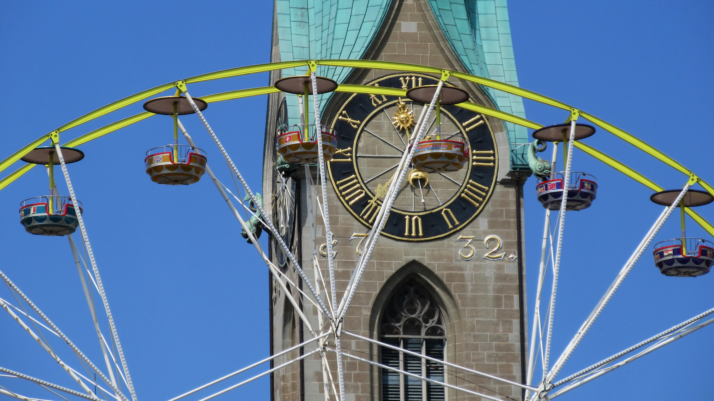

편의시설이라고는 롯데마트밖에 없었던 지곡에 들어온 롯데마트 소유의 주상복합 상가이다. 에드빌 내 들어온 상점은 아직까지 거의 변동이 없으며 저녁시간에 학생들이 단체로 가 사람이 많아진다. 참고로 롯데마트에서 사라진 베스킨라빈스가 에드빌 홍짜장과 Queen's Bread 사이에 들어왔다. 최근 제철고학생의 너무 잦은 출몰로 지곡 주민들의 불평이 많아지고 있다. 그런데 사실 어떻게 생각해보면 포철고 학생의 반이 지곡 주민이다... 그리고 2017년 10월 26일 드디어 에드빌에 신전떡볶이!!!가 생겼다. 최근에는 치과나 동물병원 등이 생겼다. 2018년 6월 5일에 알파 문구점 앞쪽에 더 벤티가 들어왔다. 2019년 뚜레쥬르가 입점했다. 이로써 에드빌에는 빵집만 3개(!)가 있게 된다. 
참고로 포스코가 재정위기로 매각한 땅에 지어진 건물이며, 건설 당시 난개발 논란이 있었다.[11]지곡2차 단지 사람들을 중심으로 전망이 안좋다며 욕을 먹었다. 건물의 모양새 또한 다른건물과 이질적이다.